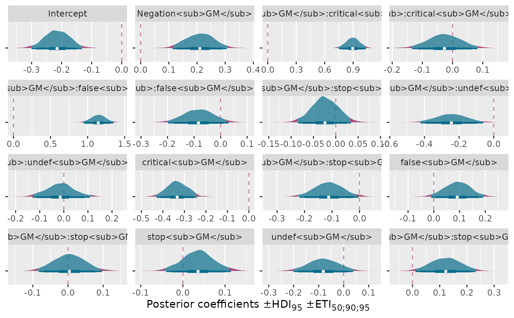

Free-scale grid of posterior coefficients, one panel per category
Source:R/theme-bayes-halfeye.R
plot_coef_grid_hdi.RdEach category gets its own free-scale panel in a grid - for coefficient posteriors, which differ wildly in natural magnitude, so a shared axis would flatten the small ones.
Usage
plot_coef_grid_hdi(
data,
category,
value = .value,
ncol = 4,
nrow = NULL,
hline = 0,
hline_color = mt_colors[2],
ylab = "Posterior coefficients ±HDI<sub>95</sub> ±ETI<sub>50;90;95</sub>",
...
)Arguments
- data
A data frame of long-format posterior draws.
- category
Unquoted column identifying each coefficient (one facet panel per level).
- value
Unquoted column of posterior draws (default
.value).- ncol, nrow
Passed to
facet_wrap().- hline
Y-intercept for a dashed reference line; defaults to
0(the null-effect reference line), passNULLto omit it.- hline_color
Color of the reference line.
- ylab
Axis label.
- ...
Passed through to
layer_halfeye_hdi().
Details
Unlike plot_ridge_hdi(), the category label is shown as the facet
strip, not an axis, so there's no fct_reorder() step - pass category
already in the order you want the facets to appear (e.g. via
forcats::fct_inorder() on however you built the long-format coefficient
draws).
Examples
mu_coef_draws <- subset(believe_projection_coef_draws, dpar == "mu")
plot_coef_grid_hdi(mu_coef_draws, category = coef, ncol = 4)
